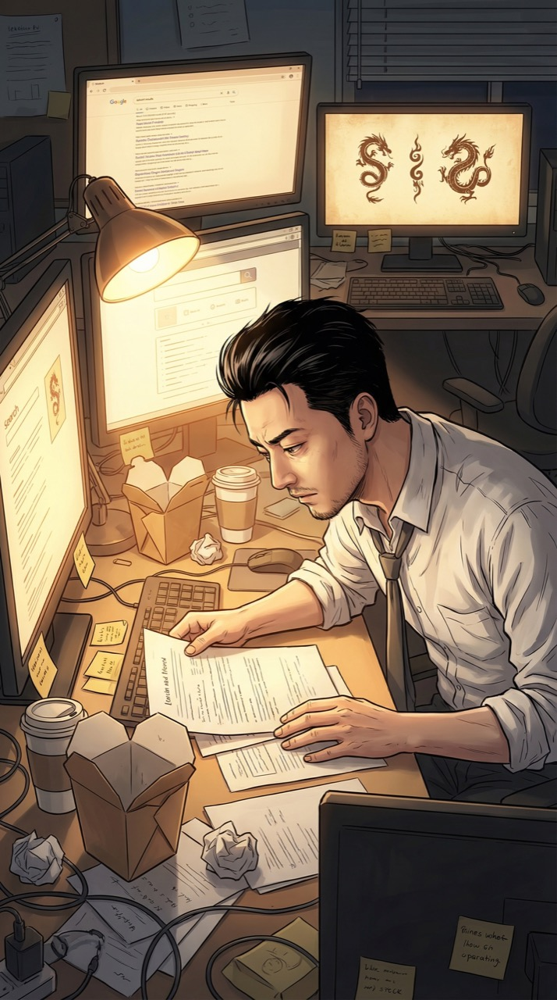
现实
凌晨两点，公司那间堆满外卖盒的办公室。屏幕上全是我搜索"龙纹符号"的结果——一无所获。
马哥发来的那份"江湖密报"上，我的公司旁边印着一个龙形符号。搜了三个小时，什么都查不到。这到底什么意思？
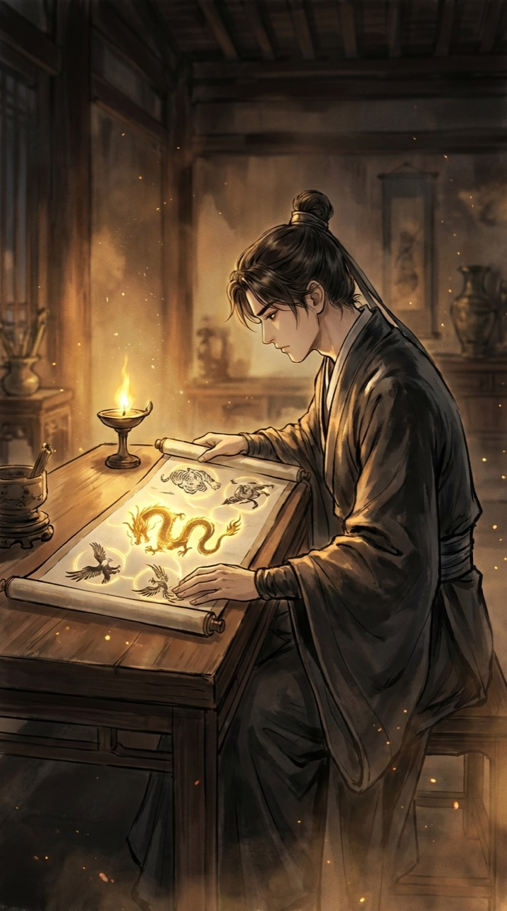
江湖
一个江湖新人在灯下反复翻看一张神秘的武林排名榜，上面的龙纹暗记，仿佛活物般隐隐欲动。
每个门派旁边都有不同的符号——有的是虎，有的是鹰。而我的……是龙。这是什么规矩？
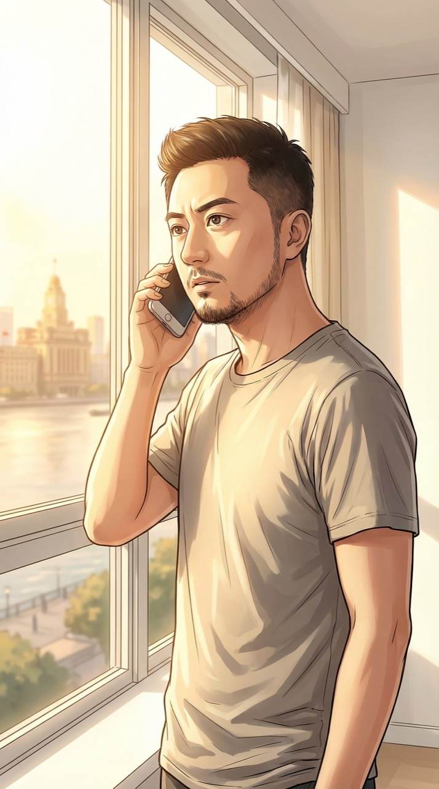
现实
第二天一早，手机震动。来电：马哥。
"小朱啊，周六有个小聚会，就在外滩华尔道夫。来吧，认识几个朋友。"
小聚会？马哥说话的语气轻飘飘的，但我后脊发凉。直觉告诉我——这不是"小聚会"。
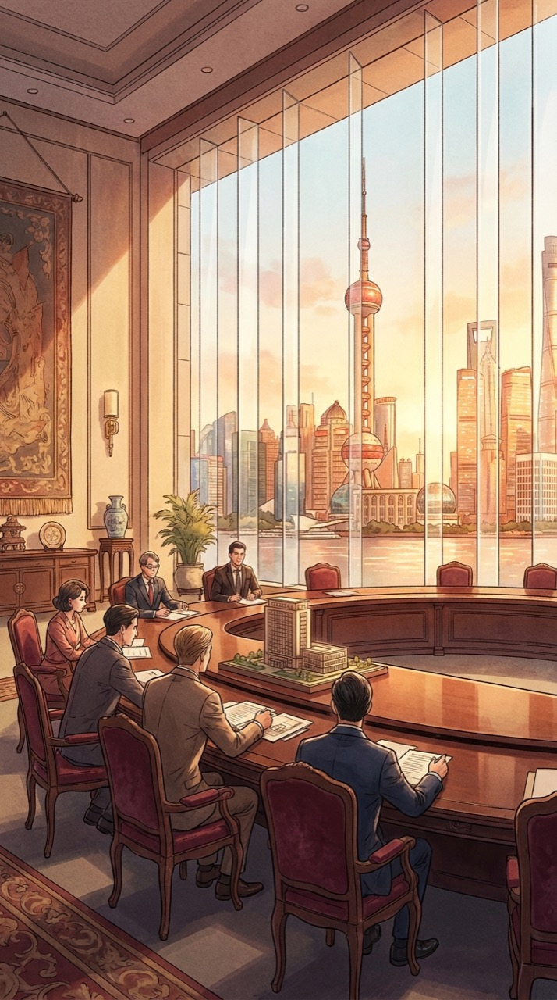
现实
周六下午。外滩华尔道夫顶层。电梯门一开——
落地窗外是整个浦江天际线，长桌铺着深色桌布，七把椅子围成半圆。已经坐了五个人。
我愣了一秒。这什么阵势？说好的"小聚会"呢？
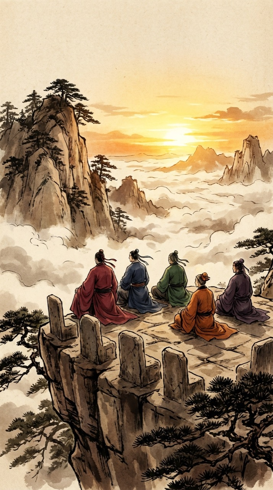
江湖
华山之巅！七大门派掌门齐聚，云海翻涌，松风如号角。
我站在山门入口，往里一看——五位掌门已经端坐。每个人面前放着一杯茶，但没人喝。他们都在等。
· · ·
现实
马哥站在长桌正中央，身后是整面落地窗。他笑眯眯的，像在主持一场茶话会。
"今天请大家来，不是路演。我有一个真实的案子——某传统零售集团要做AI转型，预算三千万。我想看看，在座各位，谁能给出最好的方案。"
三千万的案子。他当面甩出来让七个人抢。这是聚会？这是擂台。
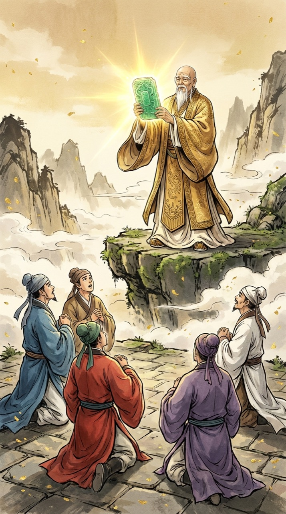
江湖
武林盟主举起令牌："今日华山论剑，七位英雄各展绝学。胜者——入我华山门下。"
入华山门下？翻译成人话就是——谁赢了，马哥投谁。这局够大的。
现实
林可第一个站起来。高跟鞋踩在大理石上，节奏感十足。PPT一打开——排版精美、数据扎实、逻辑清晰。
"传统零售的核心痛点不在技术，在决策链。我的方案是用AI缩短决策链，从七层审批压到两层。"
不得不承认，她的方案很犀利。但……总觉得少了点什么。
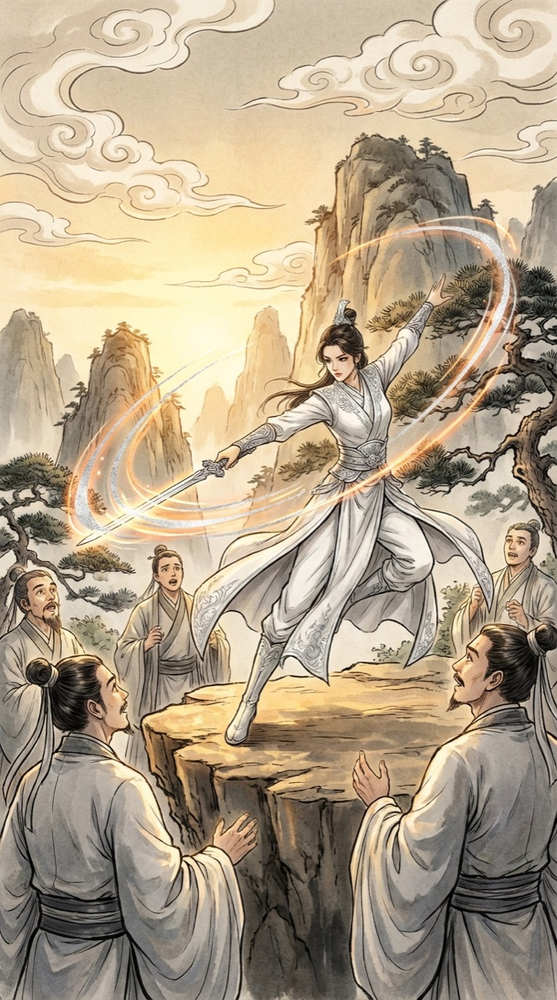
江湖
峨眉掌门亮剑！剑光凌厉，招招逼人。在座几人面色微变。
峨眉剑法——招式精妙，攻守兼备。但我看了一会儿就发现了：招法太正，没有内力灌注。看着好看，但真打起来未必扛得住重击。
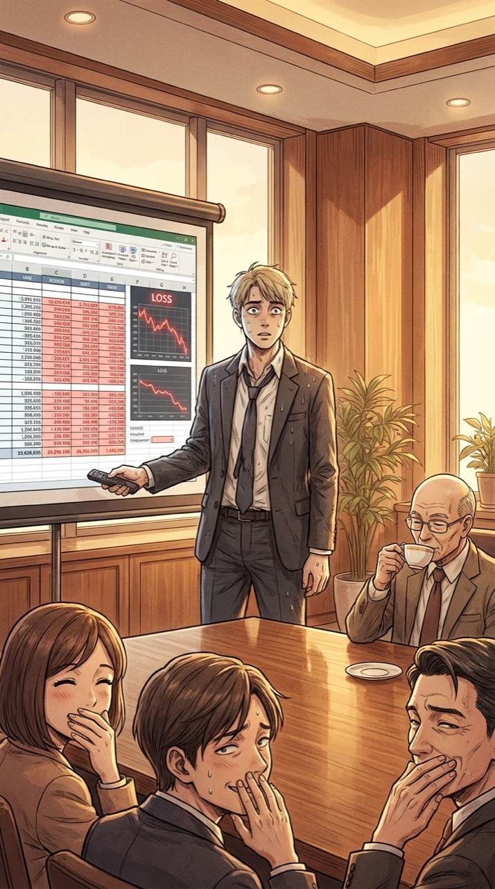
现实
第三个上台的哥们手抖了一下，PPT往回翻——全场沉默了两秒。
屏幕上赫然显示：上月亏损 ¥2,187,432.00。
那哥们脸瞬间白了。马哥端着茶杯，表情没变。
这位仁兄……当众走火入魔了。
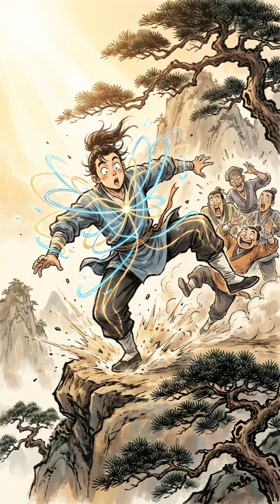
江湖
一位武者当众练功时真气逆行，经脉图赫然浮现在身后——在场众人连忙后退三步。
惨。真的惨。当着盟主的面露了底牌，这仗不用打了。
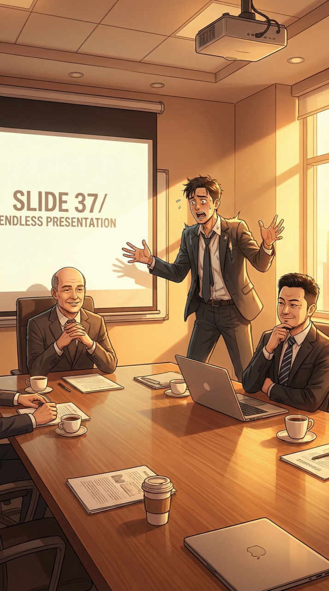
现实
第五个人讲了三十分钟。超时一倍。马哥全程笑眯眯，一口茶都没喝，也没打断。
武当长老的太极——你以为他不管，其实他在看你自己出多少破绽。这哥们每多说一分钟，马哥心里的叉就多画一个。
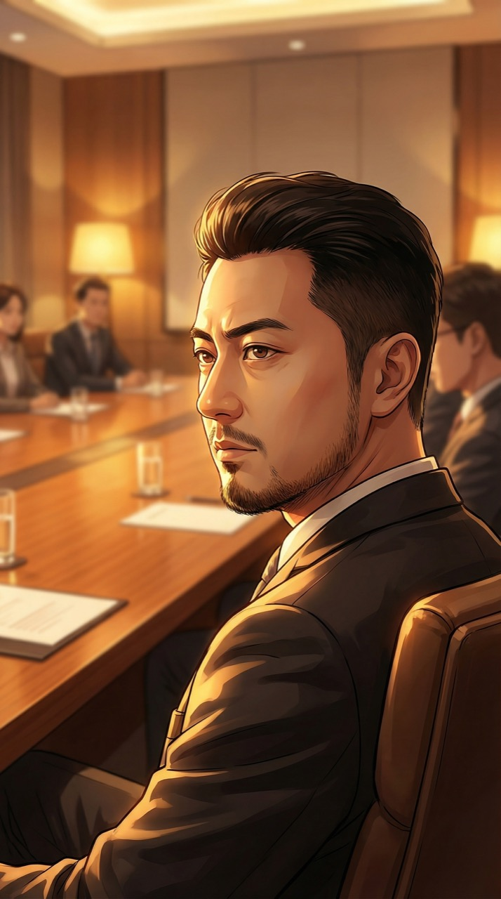
现实
我坐在角落的位子，用余光扫了一圈。
七个人。林可是最强的。翻车哥和话多哥可以排除了。剩下三个人——一个做供应链AI的，方案中规中矩；一个做大模型的，但明显对零售不懂；还有一个一直没说话，手里不停转笔。这个人有意思。
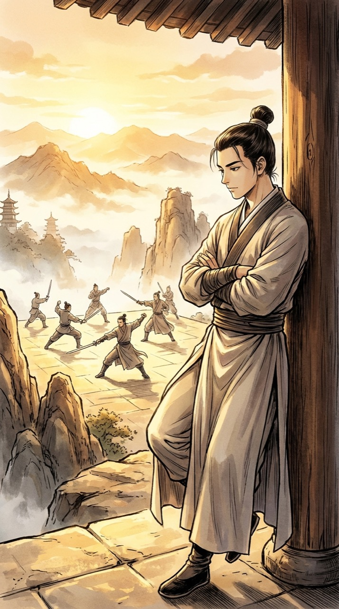
江湖
我在角落抱臂观战。峨眉、武当、昆仑、点苍……各家门派已轮番亮相。有的剑法华丽但缺少杀气，有的内力深厚但不懂变通。
还有一个人始终未出手。他跟我一样——在等。高手过招，最忌先出招。
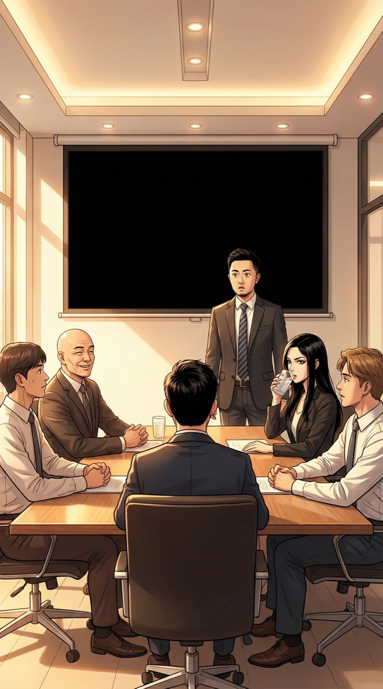
现实
决策点
轮到我了。我站起来走到台前，按下投影仪——黑屏。按了三次，没反应。
全场安静。有人偷笑。林可端起杯子喝了口水，目光像手术刀。
投影仪坏了？还是……有人故意的？我看了马哥一眼，他笑眯眯地看着我，像在看一出好戏。
⚔️ 决策点一：投影仪坏了，怎么办？
A: 直接用白板手画架构图，口述方案
B: 掏出笔记本连大屏，现场打开代码仓库做live demo
黑客基因启动——不用PPT？那我就用代码说话。
· · ·
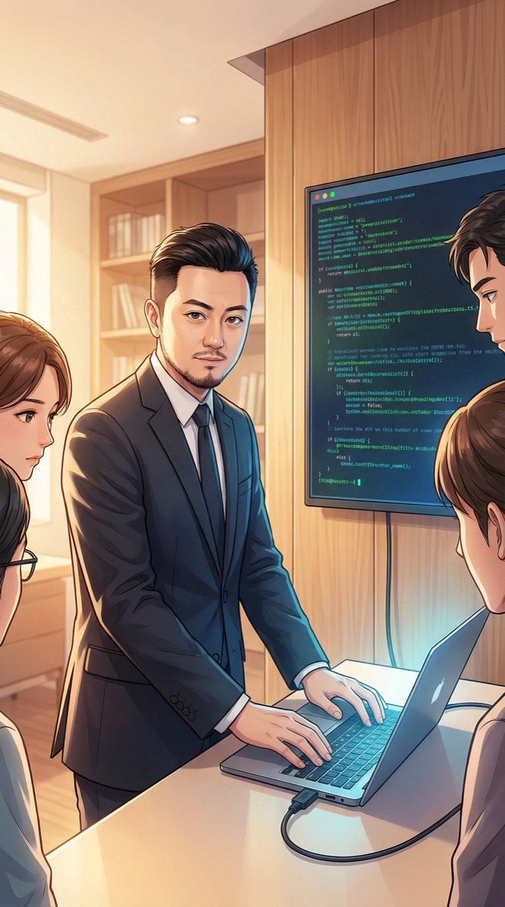
现实
我从包里掏出笔记本，HDMI线一接——大屏亮了。不是PPT，是终端。
"各位不好意思，PPT没带。但方案……我写给你们看。"
手指落到键盘上的那一刻，心反而安定了。代码是我的母语。
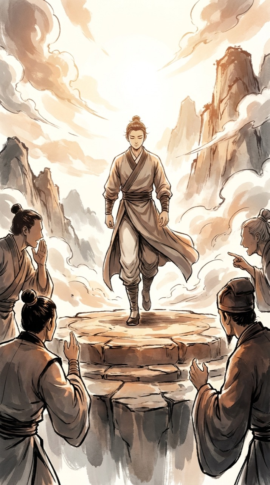
江湖
"不用兵器？"众人议论纷纷。只见那人赤手空拳走上擂台，双目沉静如水。"那我就用拳。"
不是我不用兵器——是拳头，就是我的兵器。
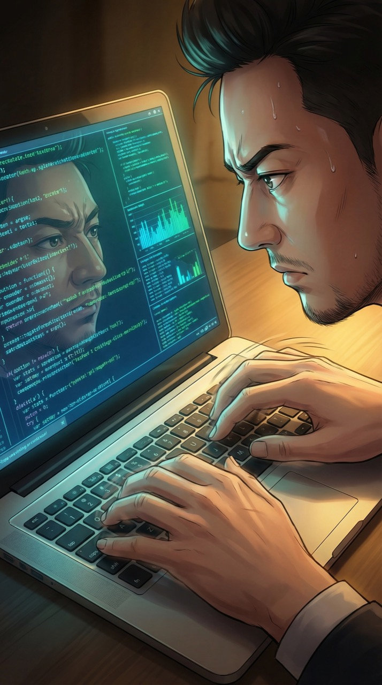
现实
我打开代码仓库，现场写一个demo：用那家零售集团的公开数据，跑一个AI选品模型。
键盘声是唯一的声音。五分钟后，模型吐出了第一批结果。
这批数据我昨晚就研究过了。不是临时抱佛脚——是我本来就准备了两套方案。PPT是给外行看的，代码是给内行看的。马哥你要看哪个？
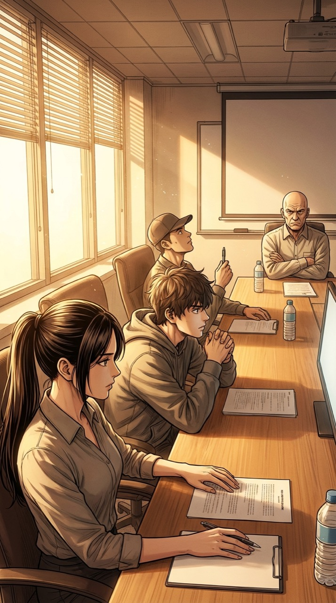
现实
我讲到数据结构设计的时候，翻车哥不自觉地探前了身子。话多哥停下了转笔。那个一直沉默的创业者——第一次抬起了头，眼里有光。
林可放下了手中的笔。
马哥——他第一次没笑。
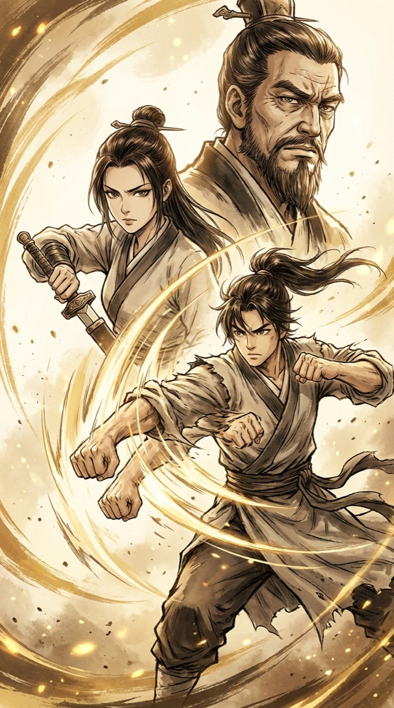
江湖
少林七十二绝技——他当场练了一路给你看。不是表演，是实战。每一拳都打在要害上，又快又准。
峨眉掌门的手不自觉地按上了剑柄。盟主的笑容——消失了。
现实
十二分钟。我提前三分钟结束了。
屏幕上跑着实时结果：AI选品模型把那家零售集团的滞销库存压低了23%。用的是真实数据。
"以上。方案和代码都在这个仓库里，各位可以审。"
说完我就坐下了。手心全是汗，但脸上不能让人看出来。
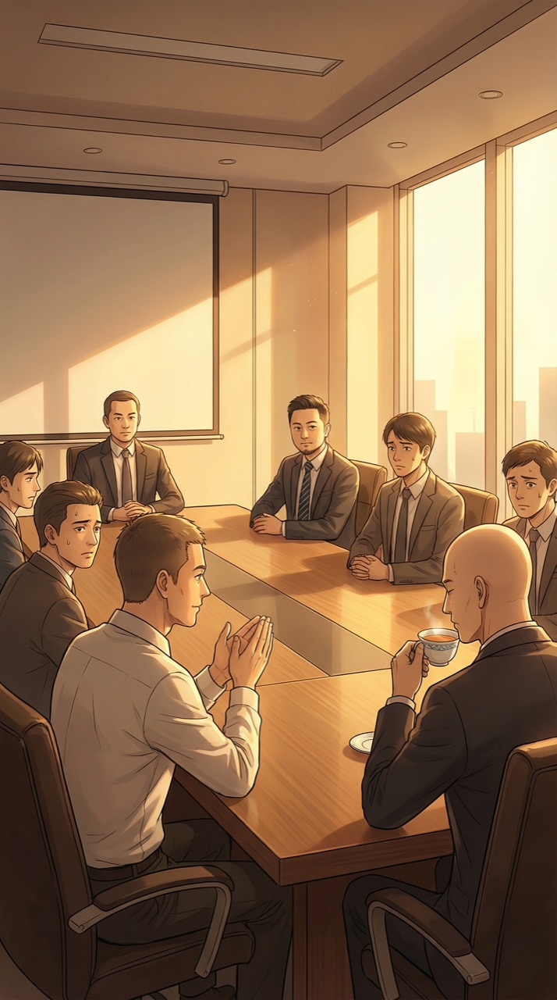
现实
三秒的沉默后，那个一直沉默转笔的创业者开始鼓掌。一个人。
然后翻车哥跟着拍了两下。马哥端起茶杯，喝了一口，什么也没说。
马哥没表态，反而让我更紧张了。这种人，笑着的时候你不知道他想什么，不笑的时候——你更不知道。
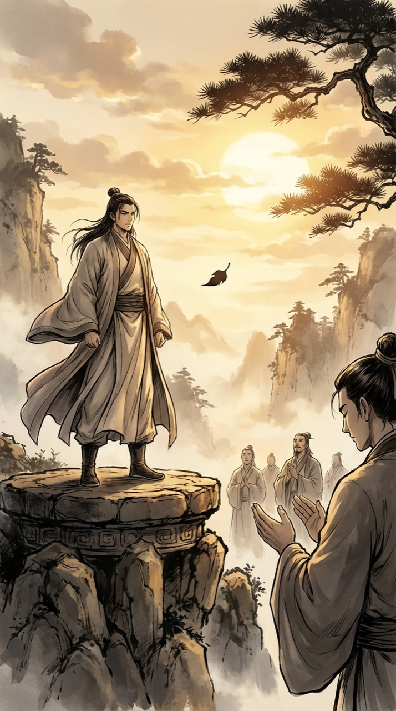
江湖
擂台之上，年轻侠客收拳而立。一片落叶缓缓飘下。
崆峒掌门第一个击掌。"好拳。"
但盟主没说话。高手过招的规矩——赢了不算赢，盟主说赢才算赢。
· · ·
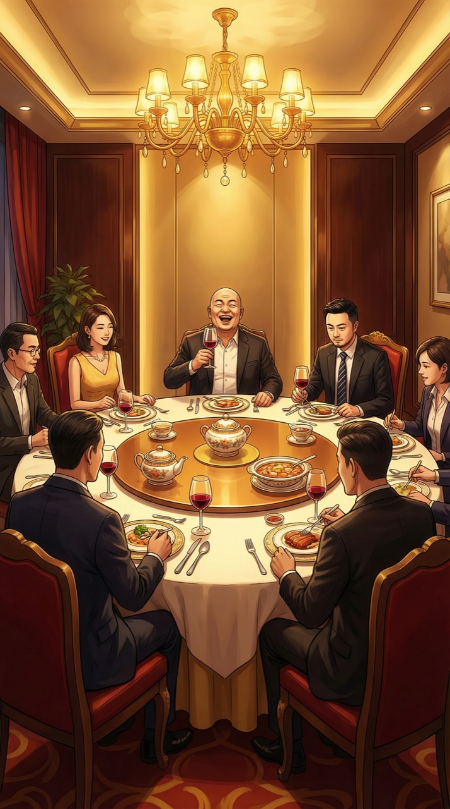
现实
PK结束。马哥拍了拍手："今天没有结果。但我请大家吃个饭——顶楼有包间。"
转场到餐厅。圆桌。灯光暖黄色。红酒。马哥坐主位，我在他左手第三个位置。
我开始留意马哥跟每个人说话的方式。跟林可——尊重但有距离。跟翻车哥——温和但眼神已经不在了。跟我——
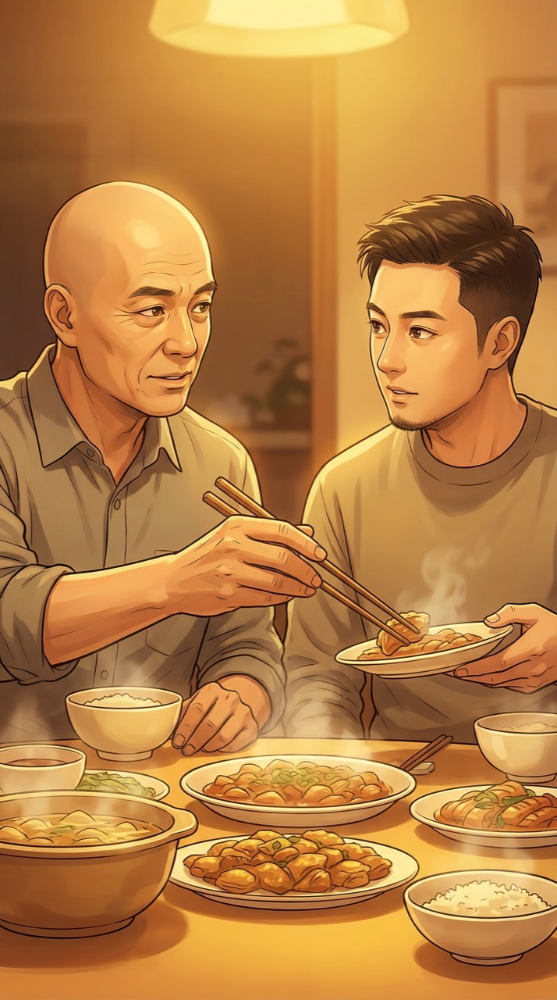
现实
马哥给我夹了道菜："小朱，你今天的demo不错。不过——你最后三分钟为什么没用完？"
这个问题……他在试探我。说完了就是说完了，我不会为了填时间加废话。但我能这么回答吗？
"说完了就完了。代码不骗人，多说无益。"
马哥看了我一眼，嘴角微微上扬，给自己倒了杯酒。
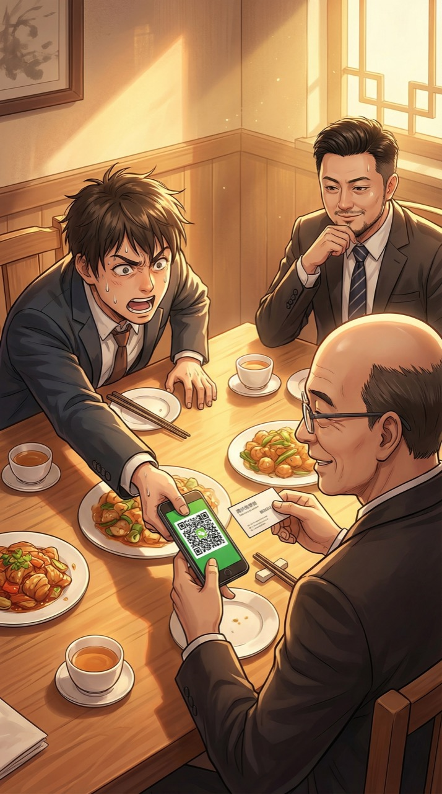
现实
席间有个创业者疯狂找马哥加微信、换名片、敬酒。连续三轮。
当众向盟主递帖子，吃相未免太难看。马哥笑着收了名片，但我注意到——他把名片放在了盘子左边。之前林可的名片，放在了他西装内袋里。
细节。全是细节。
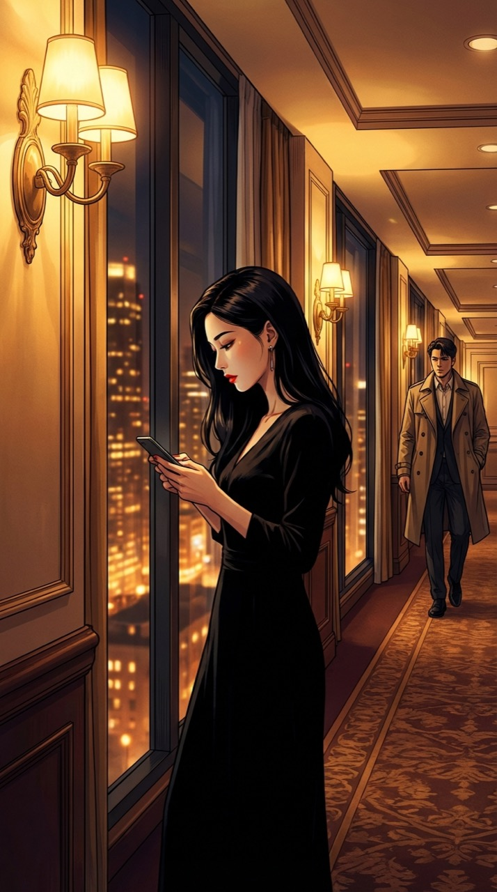
现实
决策点
我借口上洗手间出了包间。走廊尽头，落地窗前——林可也在。她看着窗外的夜景，手里拿着手机。
"朱江。"她转过来看我，"你也收到那个奇怪的排名表了？"
⚔️ 决策点二：林可问起"江湖密报"，如何回应？
A: 承认收到了，试探林可知道多少
B: 否认，装不知道
菩萨心肠——不对潜在盟友说谎。再说，我也想知道她手里有多少牌。
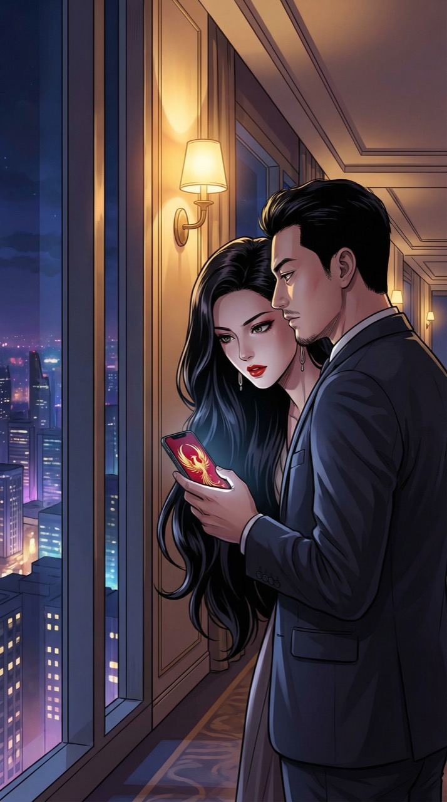
现实
"收到了。你呢？你的符号是什么？"
林可把手机递过来——她的排名表上，自己公司旁边印着一个"凤"字纹。
"我是凤。你呢？"
"龙。"
走廊里只有空调运转的嗡嗡声。我们对视了两秒。
龙和凤。马哥给我们俩的标记……是配对的？还是对立的？
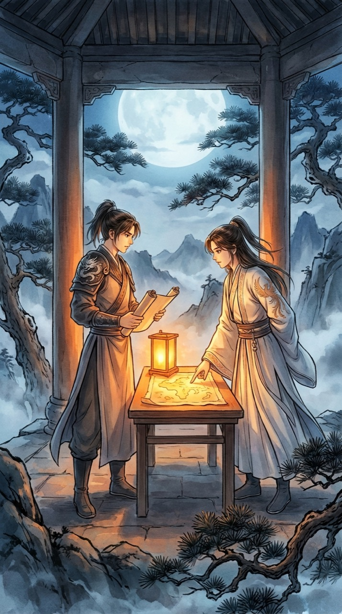
江湖
月下。华山半腰的石亭中，两个年轻侠客相对而坐。一个身负龙纹，一个佩戴凤令。
江湖中的情报交换——你给我看你的底牌，我给你看我的。谁先收手，谁就输了这一局。
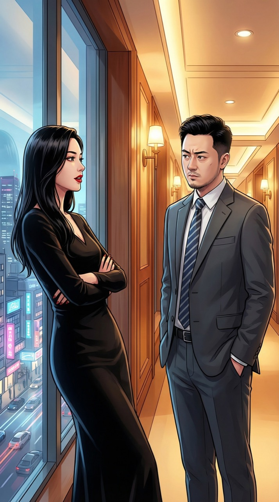
现实
决策点
林可把手机收回去，靠在窗边，双手抱臂。
"朱江，马哥这局不简单。你看出来了吧——今天不是投资路演，是选拔赛。"
"你想说什么？"
"要不我们联手，先搞清楚马哥到底在玩什么。之后各凭本事。"
⚔️ 决策点三：林可提议联手，接不接？
A: 同意临时联盟，但保留各自底线
B: 拒绝，各自为战
菩萨心肠+霹雳手段——先合作获取信息优势，但绝不出卖核心利益。黑客思维：先拿到root权限再说。
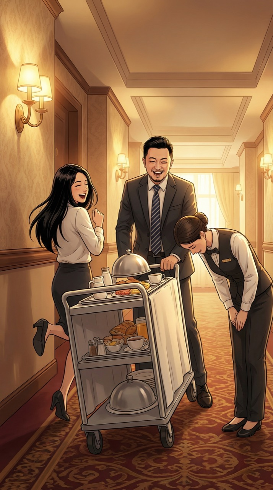
现实
我刚要说话——一辆送餐车突然从拐角冲出来，差点撞到我们。服务员连连鞠躬道歉。
江湖暗箭！——哦不，就是个推车的。
但这个打断反而让气氛松了下来。我和林可都笑了。
"成交。临时联盟。但有一条——互不刺探对方的核心技术。"
林可伸出手："一言为定。"
· · ·
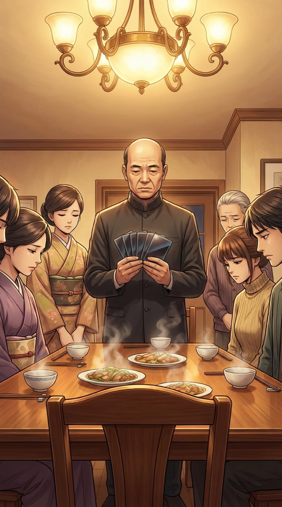
现实
回到餐桌。马哥放下酒杯，站了起来。全场安静。
"感谢各位赏脸。今天只是认识认识——真正的事情，还没开始。"
他从西装口袋里掏出一叠卡片，黑色，金属质感，逐一递给每个人。
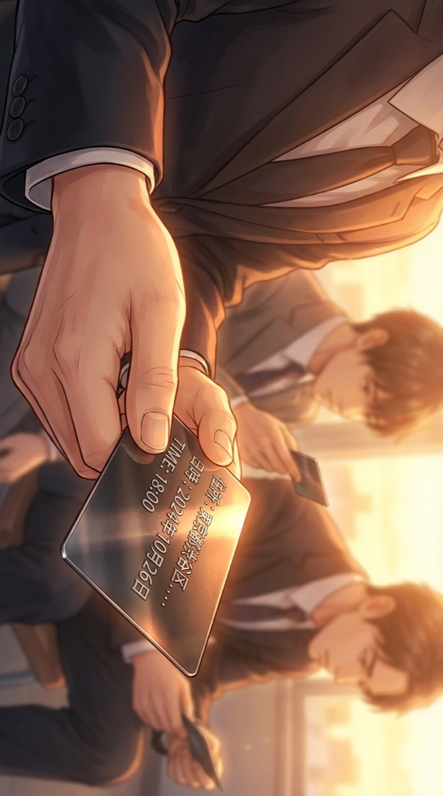
现实
卡片正面：一个地址。浦东某写字楼。一个日期——下周六。
翻过来——
背面印着跟邮件里一模一样的符号系统。龙、凤、虎、鹰……七个符号排成一圈。中间多了一行烫金小字。
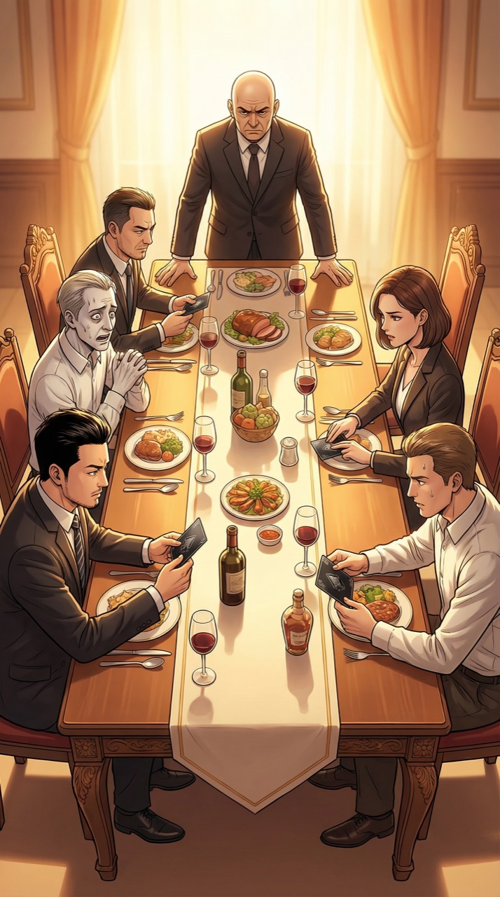
现实
决策点
那行烫金小字：
"弃权者，永不入局。"
我抬头看了一圈——七张脸，七种表情。翻车哥脸色发白。话多哥在翻来覆去地看卡片。林可目光平静，但指尖微微发力，把卡片边缘按出了印痕。
⚔️ 决策点四：这张卡片，去不去？
A: 去——"不入虎穴焉得虎子"
B: 先调查清楚再决定
永不退缩+悟空精神+黑客好奇心。这个马哥要么是贵人，要么是对手。无论哪种——都比无聊强。
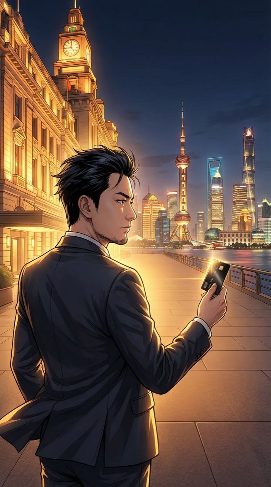
江湖
华山论剑只是序章。真正的武林大会——七天后见。
我站在酒店门口，夜风吹过外滩。手里的黑色卡片在路灯下反射着冷光。
龙纹。弃权者永不入局。下周六。
马哥，你这局……我接了。